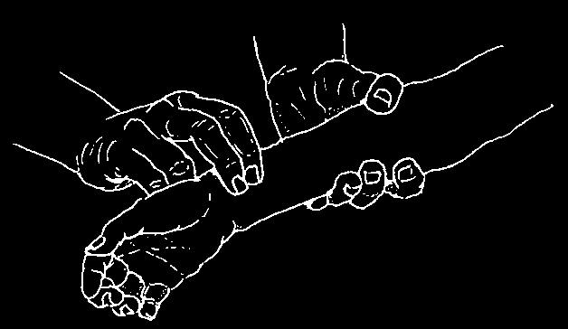
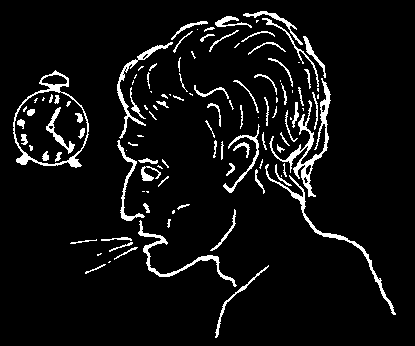
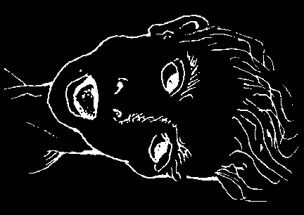
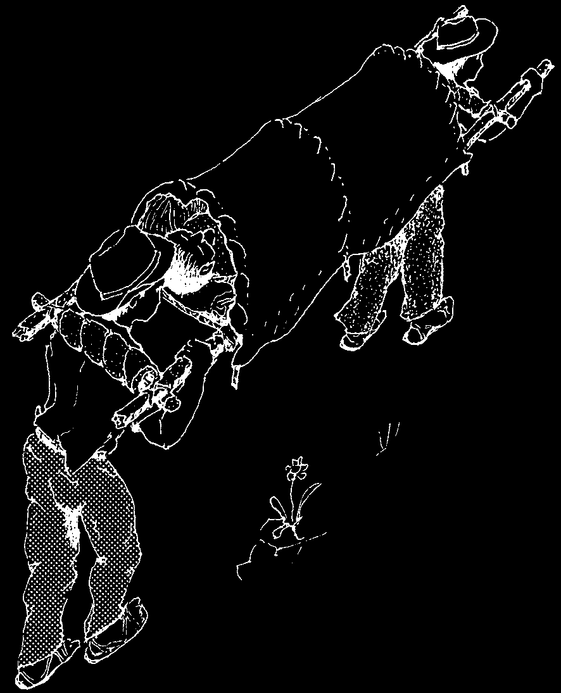
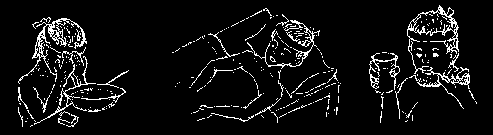
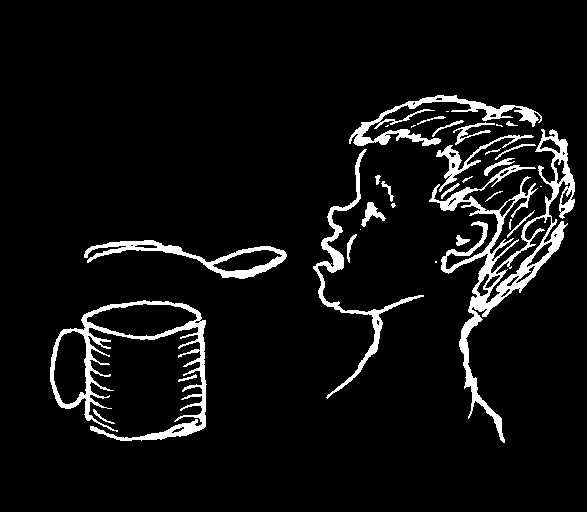

4. Good Food
If the sick person feels like eating, let him. Most sicknesses do not require special diets.
A sick person should drink plenty of liquids and eat a lot of nourishing food (see Chapter 11).
If the person is very weak, give him as much nourishing food as he can eat, many times a day. If necessary, mash the foods, or make them into soups or juices.
Energy foods are especially important—for example, porridges of rice, wheat, oatmeal, potato, or cassava. Adding a little sugar and vegetable oil will increase the energy. Also encourage the sick person to drink plenty of sweetened drinks, especially if he will not eat much.
A few problems do require special diets. These are explained on the following pages:
anemia...................................... p. 124 stomach ulcers and heartburn.................... p. 128 appendicitis, gut obstruction, acute abdomen
(in these cases take no food at all).... p. 93 diabetes..................................... p. 127 heart problems................................ p. 325 gallbladder problems........................... p. 329 high blood pressure............................ p. 125
SPECIAL CARE FOR A PERSON WHO IS VERY ILL
1. Liquids
It is extremely important that a very sick person drink enough liquid. If he only can drink a little at a time, give him small amounts often. If he can barely swallow, give him sips every 5 or 10 minutes.
Measure the amount of liquids the person drinks each day. An adult needs to drink
2 liters or more every day and should urinate at least a cup (240 ml.) of urine 3 or 4 times daily. If the person is not drinking or urinating enough, or if he begins to show signs of dehydration (p. 151), encourage him to drink more. He should drink nutritious liquids, usually with a little salt added. If he will not drink these, give him a
Rehydration Drink (see p. 152). If he cannot drink enough of this, and develops signs of dehydration, a health worker may be able to give him intravenous solution. But the need for this can usually be avoided if the person is urged to take small sips often.



2. Food
If the person is too sick to eat solid foods, give her soups, milk, juices, broths, and other nutritious liquids (see Chapter 11). A porridge of cornmeal, oatmeal, or rice is also good, but should be given together with body-building foods. Soups can be made with egg, beans, or well-chopped meat, fish, or chicken. If the person can eat only a little at a time, she should eat several small meals each day.
3. Cleanliness
Personal cleanliness is very important for a seriously ill person. She should be bathed every day with warm water.
Change the bed clothes daily and each time they become dirty. Soiled or bloodstained clothes, bedding, and towels of a person with an infectious disease should be handled with care. To kill any viruses or germs, wash these in hot soapy water, or add some chlorine bleach.
4. Changing Position in Bed
A person who is very weak and cannot turn over alone should be helped to change position in bed many times each day. This helps prevent bed sores (see p. 214).
A child who is sick for a long time should be held often on her mother’s lap.
Frequent changing of the person’s position also helps to prevent pneumonia, a constant danger for anyone who is very weak or ill and must stay in bed for a long time. If the person has a fever, begins to cough, and breathes with fast, shallow breaths, she probably has pneumonia (see p. 171).
5. Watching for Changes
You should watch for any change in the sick person’s condition that may tell you whether he is getting better or worse. Keep a record of his 'vital signs’. Write down the following facts 4 times a day:
temperature pulse breathing
(how many degrees)
(beats per minute)
(breaths per minute)
Also write down the amount of liquids the person drinks and how many times a day he urinates and has a bowel movement. Save this information for the health worker or doctor.
It is very important to look for signs that warn you that the person’s sickness is serious or dangerous. A list of Signs of Dangerous Illness is on the next page. If the person shows any of these signs, seek medical help immediately.


SIGNS OF DANGEROUS ILLNESS
A person who has one or more of the following signs is probably too sick to be treated at home without skilled medical help. His life may be in danger. Seek medical help as soon as possible. Until help comes, follow the instructions on the pages indicated.
page
1. Loss of large amounts of blood from anywhere in the body......82, 264, 281
2. Coughing up blood............................................179
3. Marked blueness of lips and nails (if it is new)........................30
4. Great difficulty in breathing; does not improve with rest............167, 325
5. The person cannot be wakened (coma).............................78
6. The person is so weak he faints when he stands up..................325
7. Twelve hours or more without being able to urinate...................234
8. A day or more without being able to drink any liquids.................151
9. Heavy vomiting or severe diarrhea that lasts for more than one day or more than a few hours in babies................................151
10. Black stools like tar, or vomit with blood or feces.....................128
11. Strong, continuous stomach pains with vomiting in a person who does not have diarrhea or cannot have a bowel movement..............93
12. Any strong continuous pain that lasts for more than 3 days......... 29 to 38
13. Stiff neck with arched back, with or without a stiff jaw.............182, 185
14. More than one seizure (fit) in someone with fever or serious illness....76, 185
15. High fever (above 39° C) that cannot be brought down or that lasts more than 4 or 5 days......................75
16. Weight loss over an extended time.............................20, 400
17. Blood in the urine..........................................146, 234
18. Sores that keep growing and do not go away with treatment. 191, 196, 211, 212
19. A lump in any part of the body that keeps getting bigger...........196, 280
20. Very high blood pressure (220/120 or greater).......................327
21. Problems with pregnancy and childbirth:
any bleeding during pregnancy..............................249, 281 high blood pressure (140/90 or greater)............................249 long delay once the waters have broken and labor has begun..........267 severe bleeding...............................................264

WHEN AND HOW TO LOOK FOR MEDICAL HELP
Seek medical help at the first sign of a dangerous illness. Do not wait until the person is so sick that it becomes difficult or impossible to take him to a health center or hospital.
If a sick or injured person’s condition could be made worse by the difficulties in moving him to a health center, try to bring a health worker to the person. But in an emergency when very special attention or an operation may be needed (for example, appendicitis), do not wait for the health worker. Take the person to the health center or the hospital at once.
When you need to carry a person on a stretcher, make sure he is as comfortable as possible and cannot fall out. If he has any broken bones, splint them before moving him (see p. 99). If the sun is very strong, rig a sheet over the stretcher to give shade yet allow fresh air to pass underneath
WHAT TO TELL THE HEALTH WORKER
For a health worker or doctor to recommend treatment or prescribe medicine wisely, she should see the sick person. If the sick person cannot be moved, have the health worker come to him. If this is not possible, send a responsible person who knows the details of the illness. Never send a small child or a fool.
Before sending for medical help, examine the sick person carefully and completely. Then write down the details of his disease and general condition (see
Chapter 3).
On the next page is a form on which you can make a PATIENT report. Several copies of this form are at the end of this book. Tear out one of these forms and carefully complete the report, giving all the details you can.
When you send someone for medical help, always send a completed information form with him.
PATIENT report
TO USE WHEN SENDING FOR MEDICAL HELP
Name of the sick person: ________________________________Age: __________________
Male ___________ Female __________ Where is he (she)? ___________________________
What is the main sickness or problem right now? ___________________________________
______________________________________________________________________________
______________________________________________________________________________
When did it begin? _____________________________________________________________
How did it begin? ______________________________________________________________
Has the person had the same problem before? _____________When? ________________
Is there fever? ____________________ How high? ____________°
When and for how long? ________________________________________________________
Pain? ___________ Where? _________ What kind? __________________________________
What is wrong or different from normal in any of the following?
Skin: __________ Ears: _____________________________________________________
Eyes: __________ Mouth and throat: __________________________________________
Genitals: ________________________________________________________________
Urine: Much or little? ______________ Color? _______________Trouble urinating? _______
Describe: _______ Times in 24 hours: ______________________Times at night: _________
Stools: Color? ___ Blood or mucus? _______________________Diarrhea? ______________
Number of times a day: ____________ Cramps? _____________Dehydration? ___________
Mild or severe? ___________________ Worms? ______________What kind? _____________
Breathing: Breaths per minute: _____ Deep, shallow, or normal? _____________________
Difficulty breathing (describe): ___________________________________________________
Cough (describe): _____________________________________________________________
Wheezing? _____ Mucus? _________ With blood? __________________________________
Does the person have any of the SIGNS OF DANGEROUS ILLNESS listed on page 42? ________________________ Which? (give details) _________________________
Other signs:
Is the person taking medicine? _____ What? _______________________________________
Has the person ever used medicine that has caused a rash, hives (or bumps) _________ with itching, or other allergic reactions? ____________________What? _________________
The state of the sick person is: Not very serious: ____________Serious: _______________
Very serious: __________________________________________________________________

CHAPTER
Healing Without
Medicines
For most sicknesses no medicines are needed. Our bodies have their own defenses, or ways to resist and fight disease. In most cases, these natural defenses are far more important to our health than are medicines.
People will get well from most sicknesses
—including the common cold and 'flu’—by themselves, without need for medicines.
To help the body fight off or overcome a sickness, often all that is needed is to:
keep clean get plenty of rest eat well and drink a lot of liquid
Even in a case of more serious illness, when a medicine may be needed, it is the body that must overcome the disease; the medicine only helps. Cleanliness, rest, nutritious food, and lots of water are still very important.
Much of the art of health care does not—and should not—depend on use of medications. Even if you live in an area where there are no modern medicines, there is a great deal you can do to prevent and treat most common sicknesses—if you learn how.
Many sicknesses can be prevented or treated without medicines.
If people simply learned how to use water correctly, this alone might do more to prevent and cure illnesses than all the medicines they now use...and misuse.


HEALING WITH WATER
Most of us could live without medicines. But no one can live without water. In fact, over half (57%) of the human body is water. If everyone living in farms and villages made the best use of water, the amount of sickness and death—especially of children— could be reduced.
For example, correct use of water is basic both in the prevention and treatment of diarrhea. In many areas diarrhea is the most common cause of sickness and death in small children. Contaminated (unclean) water is often part of the cause.
An important part of the prevention of diarrhea and many other illnesses is to make sure that drinking water is safe. Protect wells and springs from dirt and animals by putting fences or walls around them. Use cement or rock to provide good drainage around the well or spring, so that rain or spilled water runs away from it.
Where water may be contaminated, an
P important part of the prevention of diarrhea